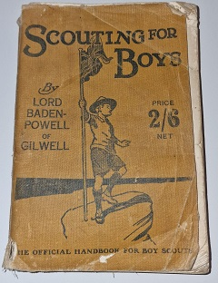
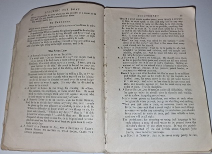
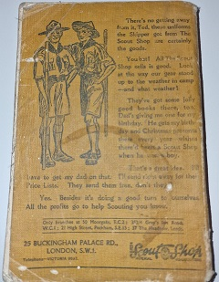

Scouting for boys
|  |  |  |
| The front cover of 'Scouting for boys' | A sample from inside 'Scouting for boys' | The rear cover of 'Scouting for boys' |
The camp
Baden Powell knew that boys enjoyed the outdoor life and so he organised a camp for a group of 20 boys on Brownsea Island in Poole Harbour in Dorset. It was here that he taught them about exploring, camping, boating, stalkinglife-saving and many other things which Scouts still do today. An important part of the camp was that boys were 'on their honour' and were trusted to organise themselves.
Scouting for boys
After the camp, Baden Powell completed his book Scouting for boys, which was bought by thousands of boys all over the country. They formed themselves into Patrols and did many of the things that they had read about in the book. It did not take long before these boys found adults to help them and Scout Troops began.
Did you know?
Scouting for boys was published in 1908. Although our copy is showing it's age it dates back to 1932, a 16th edition print.
The 2/6 price refers to older pre-decimalised currency. This copy was worth 12.5 pence, yes that's right half a penny!